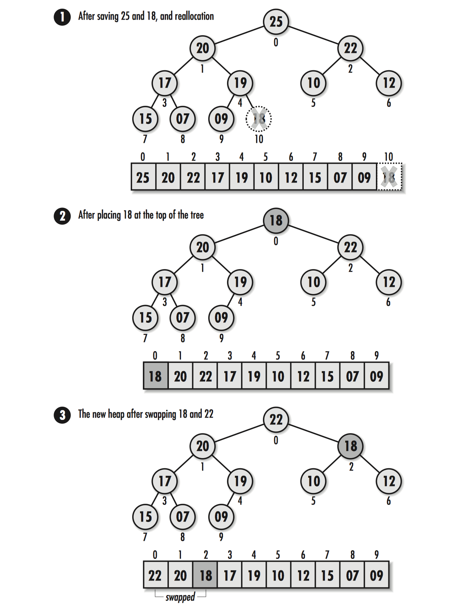

堆 (Heap)
堆是一棵二叉树, 子结点存储的值比父结点的值大称为最小值堆, 子结点存储的值比父结点小称为最大值堆
堆是有序的排列, 父子结点存在大小关系, 兄弟结点不存在直接的关系, 堆是快速取得最大/小值的数据结构
堆的实现通常存储在一个连续的数组中, 从根结点为0位置, 任意结点i其父结点的的位置是int((i-2)/2), 舍弃掉小数部分
堆是左平衡的树, 随着结点的增加, 树会逐级从左至右增长.
向堆中插入节点

删除堆顶点

/* heap.h */
#ifndef HEAP_H
#define HEAP_H
/* 堆的数据结构 */
typedef struct Heap_ {
int size;
/* 调用者自定义比较函数, 符合返回 > 0, 不符合返回 < 0, 相等返回 = 0 */
int (*compare)(const void *key1, const void *key2);
void (*destroy)(void *data);
void **tree;
} Heap;
void heap_init(Heap *heap, int (*compare)(const void *key1, const void *key2),
void (*destroy)(void *data));
void heap_destroy(Heap *heap);
/* 插入结点, 复杂度是 O(lg n) */
int heap_insert(Heap *heap, const void *data);
/* 释放堆顶部的结点 复杂度是O(lg n) */
int heap_extract(Heap *heap, void **data);
#define heap_size(heap) ((heap)->size)
#endif堆的实现
/* heap.c */
#include <stdlib.h>
#include <string.h>
#include "heap.h"
/* 父结点位置 */
#define heap_parent(npos) ((int)(((npos) - 1) / 2))
/* 左子结点位置 */
#define heap_left(npos) (((npos) * 2) + 1)
/* 右子结点位置 */
#define heap_right(npos) (((npos) * 2) + 2)
/* 初始化 */
void heap_init(Heap *heap, int (*compare)(const void *key1, const void *key2),
void (*destroy)(void *data))
{
heap->size = 0;
heap->compare = compare;
heap->destroy = destroy;
heap->tree = NULL;
}
/* 销毁 */
void heap_destroy(Heap *heap)
{
int i;
if (heap->destroy != NULL) {
for (i = 0; i < heap_size(heap); i++) {
heap->destroy(heap->tree[i]);
}
}
free(heap->tree);
memset(heap, 0, sizeof(Heap));
}
/* 插入结点 */
int heap_insert(Heap *heap, const void *data)
{
void *temp;
int ipos, ppos;
/* 重新给树分配一个连续的内存 */
if ((temp = (void *)realloc(heap->tree, (heap_size(heap) + 1) * sizeof(void *)))
== NULL) {
return -1;
} else {
heap->tree = temp;
}
/* 新数据插入到数组尾部 */
heap->tree[heap_size(heap)] = (void *data);
/* 新结点位置 */
ipos = heap_size(heap);
/* 新结点的父结点位置 */
ppos = heap_parent(ipos);
/* 比较新结点与父结点的大小, 将大于/小于的值交换, 以保持树的结构
* compare 为调用者自定义的比较函数
*/
while (ipos > 0 && heap->compare(heap->tree[ppos], heap->tree[ipos]) < 0) {
temp = heap->tree[ppos];
heap->tree[ppos] = heap->tree[ipos];
heap->tree[ipos] = temp;
ipos = ppos;
ppos = heap_parent(ipos);
}
heap->size++;
return 0;
}
/* 删除根结点 */
int heap_extract(Heap *heap, void **)
{
void *save, *temp;
int ipos, lpos, rpos, mpos;
/* 空堆 */
if (heap_size(heap) == 0) {
return -1;
}
/* 根结点数据 */
*data = heap->tree[0];
/* 最右结点数据 */
save = heap->tree[heap_size(heap) - 1];
/* 原堆内只有一个数据时 */
if (heap_size(heap) == 1) {
free(heap->tree);
heap->size = 0;
heap->tree = NULL;
return 0;
}
/* 多于一个数据时, 重新申请内存 */
if ((temp = (void **)realloc(heap->tree, (heap_size(heap) - 1) * sizeof(void *)))
== NULL) {
return -1;
}
heap->tree = temp;
heap->size--;
/* 原堆内尾结点调换成根结点 */
heap->tree[0] = save;
ipos = 0;
// lpos = heap_left(ipos);
// rpos = heap_right(ipos);
while (1) {
/* 比较根结点与其子结点的大小, 以保持树的结构 */
lpos = heap_left(ipos);
rpos = heap_right(ipos);
if (lpos < heap_size(heap) && heap->compare(heap->tree[lpos],
heap->tree[ipos]) > 0) {
mpos = lpos;
} else {
mpos = ipos;
}
if (rpos < heap_size(heap) && heap->compare(heap->tree[rpos],
heap->tree[mpos]) > 0) {
mpos = rpos;
}
/* 顶点条件为最大/小值时 */
if (mpos == ipos) {
break;
} else {
temp = heap->tree[mpos];
heap->tree[mpos] = heap->tree[ipos];
heap->tree[ipos] = temp;
ipos = mpos;
}
}
return 0;
}优先队列(Priority Queues)
优先队列将数据按照数据的优先级顺序排列, 这样可以最快定位到优先级最高的元素. 例如在服务器做负载均衡时, 最空闲的服务器优先级最高, 这样可以更好的处理请求服务
优先队列的实现
/* pqueue.h */
#ifndef PQUEUE_H
#define PQUEUE_H
#include "heap.h"
/* 使用堆来实现优先队列 */
typedef Heap PQueue;
/* 队列中的比较函数 compare , 当 key1 优先级大于 key2 时, 返回 1, 小于返回 -1, 相等返回 0 */
#define pqueue_init heap_init
#define pqueue_insert heap_insert
#define pqueue_extract heap_extract
/* 返回优先级最高的元素 */
#define pqueue_peek(pqueue) ((pqueue)->tree == NULL ? NULL : ((pqueue)->tree[0]))
/* 队列大小 */
#define pqueue_size heap_size
#endif 优先队列的示例: 包裹分拣
/* parels.c */
#include <stdlib.h>
#include <string.h>
#include "pqueue.h"
/* 包裹的优先级 */
typedef struct Parcel_ {
int priority;
}Parcel;
/* 取得优先级最大的包裹, 参数 parcel 指向取得的包裹 */
int get_parcel(PQueue *parcels, Parcel *parcel)
{
Parcel *data;
/* 队列中没有包裹或取包裹时出错 */
if (pqueue_size(parcels) == 0 ||
pqueue_extract(parcels, (void **)&data) != 0) {
return -1;
}
memcpy(parcel, data, sizeof(Parcel));
free(data);
return 0;
}
/* 将包裹加入到队列中 */
int put_parcel(PQueue *parcels, const Parcel *parcel)
{
Parcel *data;
/* 新包裹内存 */
if ((data = (Parcel *)malloc(sizeof(Parcel))) == NULL) {
return -1;
}
memcpy(data, parcel, sizeof(Parcel));
if (pqueue_insert(parcels, data) != 0) {
return -1;
}
return 0;
}